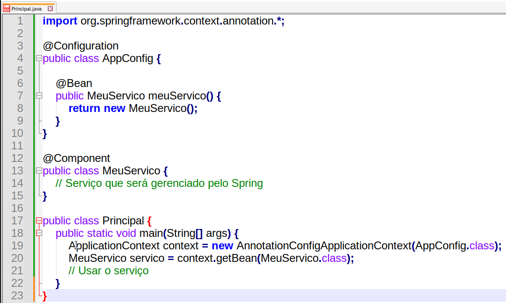

Gerenciamento de Objetos em Java, os famosos Beans.
Gestão de objetos no Java

Desenvolvedor Java Sênior na Develcode
21 de abril de 2024
A importância de gerenciar objetos em Java e a gestão de recursos dentro do sistema ou infraestrutura é fundamental para garantir a eficiência e a estabilidade das aplicações. No Java, o gerenciamento de objetos é feito principalmente através do Garbage Collector (Coletor de Lixo), que automatiza o processo de liberação de memória ocupada por objetos que não são mais necessários.
O heap da JVM é dividido em gerações para organizar os objetos de acordo com o tempo que eles têm referências válidas. Isso ajuda a otimizar o uso de memória e evitar gargalos, separando objetos de vida curta dos de vida longa. Além disso, o uso de algoritmos de coleta de lixo, como o Mark-Compact, ajuda a evitar a fragmentação do heap e a manter a eficiência na alocação de novos objetos.
Já a gestão de recursos dentro do sistema ou infraestrutura envolve planejar e avaliar com precisão o que é necessário para a conclusão de um projeto. Isso inclui a alocação eficiente de recursos, como memória, processamento e armazenamento, para evitar desperdícios e maximizar a performance.
Um bom gerenciamento de objetos e recursos é crucial para o desenvolvimento de aplicações robustas, escaláveis e de alto desempenho em Java.
Dentro do mundo Java podemos encontrar o Framework Spring representa uma opção para gerenciar a criação de objetos principalmente através do padrão de projeto Inversão de Controle (IoC) e Injeção de Dependência (DI). Durante a execução de uma sequência de passos, o Spring utiliza um contêiner IoC para criar e gerenciar objetos automaticamente. Isso é feito com base na configuração definida pelo desenvolvedor, seja através de anotações, XML ou configuração baseada em Java.
Aqui está um resumo de como o Spring lida com a criação de objetos:
1. Definição de Beans: Os objetos gerenciados pelo Spring são definidos como beans no contêiner IoC.
2. Configuração de Beans: A configuração específica como e quando os beans são criados, incluindo escopo, ciclo de vida e dependências.
3. Injeção de Dependência: O Spring injeta as dependências necessárias nos beans automaticamente, seja por meio de construtores, métodos setter ou campos.
4. Gerenciamento de Ciclo de Vida: O contêiner IoC gerencia o ciclo de vida dos beans, incluindo a inicialização e a destruição.
Além disso, o Spring oferece suporte a programação assíncrona e manipulação de threads, o que pode ser relevante durante a execução de sequências de passos que envolvem processamento paralelo ou assíncrono.
Abaixo podemos ver um exemplo de código simples de como um bean, um objeto em Java, pode ser configurado e gerenciado no Spring:

Exemplo de código Java utilizando o Framework Spring.
Neste exemplo, AppConfig é uma classe de configuração que define um método meuServico anotado com Bean, indicando ao Spring que ele deve gerenciar a criação e a instância desse objeto. A classe MeuServico é anotada com o arroba.
A gestão de recursos em uma aplicação robusta é crucial para assegurar que o software funcione de maneira eficiente e confiável. Ela envolve o planejamento cuidadoso e a alocação de recursos como memória, processamento e armazenamento, além do monitoramento e otimização do uso desses recursos ao longo do tempo. Saiba que a gestão eficaz de recursos permite:
- Maximizar a performance: Utilizando os recursos de forma inteligente, é possível alcançar um desempenho ótimo da aplicação.
- Evitar desperdícios: Alocando apenas o necessário, evita-se o uso excessivo de recursos, o que pode ser custoso.
- Escalabilidade: Com uma boa gestão, a aplicação pode crescer e se adaptar a novas demandas sem comprometer a qualidade ou a performance.
- Disponibilidade: Recursos bem gerenciados garantem que a aplicação esteja disponível quando necessário, sem interrupções inesperadas.
- Manutenção: Facilita a identificação e correção de problemas, contribuindo para uma manutenção mais eficiente.
Em resumo, a gestão de recursos é um pilar para a construção de aplicações robustas, pois impacta diretamente na qualidade, estabilidade e escalabilidade do software. Fica aqui a importância para o planejamento e a utilização de uma arquitetura condizente durante o desenvolvimento de sua aplicação.